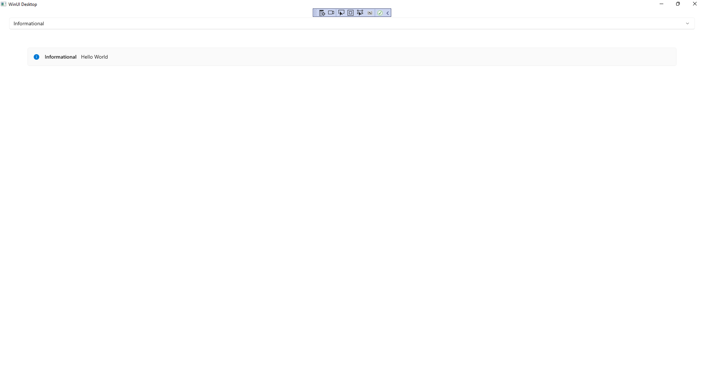
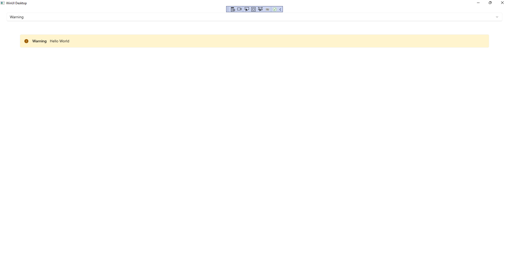

Info Bar
Learn to use the Info Bar in Windows App SDK with this Tutorial
Info Bar shows how you can use the InfoBar using the Windows App SDK which is a Control that can be
used to display status messages with different levels of Severity in an application.
Step 1
Follow Setup and Start on how to get Setup and Install what you need for Visual Studio 2022 and Windows App SDK.


Step 2
Step 3
In the XAML for MainWindow.xaml there will be some XAML for a StackPanel, this should be Removed:
<StackPanel Orientation="Horizontal"
HorizontalAlignment="Center" VerticalAlignment="Center">
<Button x:Name="myButton" Click="myButton_Click">Click Me</Button>
</StackPanel>
Step 4
While still in the XAML for MainWindow.xaml above </Window>, type in the following XAML:
<Grid>
<Grid.RowDefinitions>
<RowDefinition Height="Auto"/>
<RowDefinition Height="*"/>
</Grid.RowDefinitions>
<ComboBox Grid.Row="0" Margin="25" Name="Options"
HorizontalAlignment="Stretch" SelectionChanged="Options_SelectionChanged">
<ComboBoxItem IsSelected="True">Informational</ComboBoxItem>
<ComboBoxItem>Success</ComboBoxItem>
<ComboBoxItem>Warning</ComboBoxItem>
<ComboBoxItem>Error</ComboBoxItem>
</ComboBox>
<InfoBar Margin="50" Grid.Row="1" Name="Display"
Severity="Informational" IsClosable="False" IsOpen="True"
Title="Informational" Message="Hello World" />
</Grid>
This XAML features a Grid with two rows, denoted with RowDefinition, the
Height of Auto will accommodate the ComboBox or drop-down list which has
ComboBoxItems the Severity level, when an option is selected this will
trigger the Event of SelectionChanged and this will Invoke a Method of
Options_SelectionChanged. Then there is a RowDefinition with the Height
of * which will be other part of the Grid for the InfoBar.
It has Severity set to Informational along with the Title, the Property
for IsClosable is False which means that it cannot be closed, if this
was set to True then it could be closed. The Property for IsOpen
controls if the InfoBar is displayed or not. There is also a Property
for Message which will be what will be displayed to the user in the InfoBar.
Step 5
Step 6
In the Code for MainWindow.xaml.cs there be a Method of myButton_Click(...) this should be Removed by removing the following:
private void myButton_Click(object sender, RoutedEventArgs e)
{
myButton.Content = "Clicked";
}
Step 7
Once myButton_Click(...) has been removed, below the end of public MainWindow() { ... } type in the following Code:
private void Options_SelectionChanged(object sender, SelectionChangedEventArgs e)
{
if (Display != null)
{
string severity = (Options.SelectedItem as ComboBoxItem).Content as string;
Display.Severity = Enum.Parse<InfoBarSeverity>(severity);
Display.Title = severity;
}
}
The Method of Options_SelectionChanged will be triggered by the Event of SelectionChanged which is when an item in the ComboBox is selected.
The first thing is to check that Display has a value by seeing if it is not null and if it is then the next thing is to get the Content of
the SelectedItem from the ComboBox. This is then used to set the Title and the Severity, which uses the Method for Enum.Parse to convert
this to a value of InfoBarSeverity, for the InfoBar.
Step 8
Step 9
Once running you should see the InfoBar with Severity using the InfoBarSeverity of Informational

Step 10
If you Select one of the items in the ComboBox or drop-down list, the InfoBar will then be displayed using
the InfoBarSeverity that was selected such as Warning.

Step 11